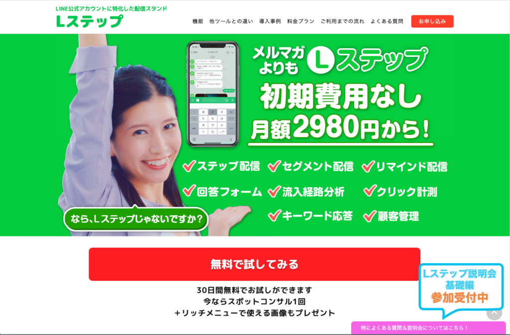
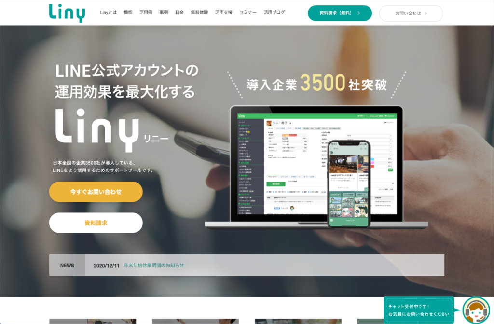
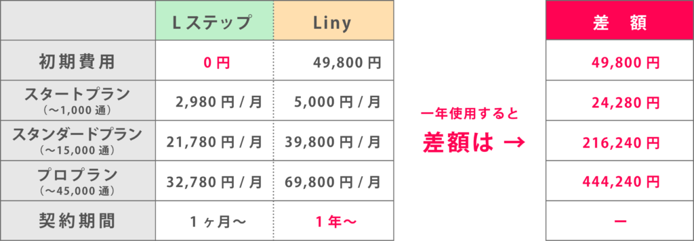

「Lステップ」と「Liny」どっちがいいの？

こんにちは！ このページでは、LINE公式アカウントのコンサルタント・matsumotoの経験から、「LステップとLiny、どちらを選ぶべき？！」というテーマについて、実例を交えて解説します。
お客様のプライバシーを守るため、一部の内容を書き換えフィクションとして公開していますので、ご了承ください。
（１）みんな最初はこれにつまずく！
昨年（2020年）、まだmatsumotoがLINE公式アカウントのコンサルタントとして活動し始めた頃のお話です。その方（松本のクライアント）は、飲食店経営をされておられ（仮にAさんとします）、すでにネットなどで情報を集め、LINE公式アカウントをぜひ導入したい！というご相談でした。
すでにある程度知識もおありだったので簡単に進むかな？と思っていたのですが、おそらく数週間、いや１ヶ月は同じことを悩んでおられました。それが「Lステップを使うか、Linyの方が良いのか？！」という問題。。。これは、LINE公式アカウントを導入する時に皆さん非常に悩まれるようですね！
（２）そもそも「Lステップ」と「Liny」って何？という方へ


ご存知ない方のために解説すると、LINE公式アカウントは基本的に無料（※）で利用できるツールです。
お客様に「友だち登録」さえしてもらえれば、お店からキャンペーンやお得情報の配信、ポイントカード機能や予約機能、くじ引きやクーポンプレゼントなど、様々な機能を使って戦略的にプロモーションを仕掛けることができます。（※メッセージ配信1,000通までは無料です）
ただ、「友だち」の数が増えてくると（100人とか、1,000人ぐらいの規模感）、顧客データの管理が必要になりますし、そのデータを活用した的確なプロモーションも可能になります。
たとえば、「友だちそれぞれの属性に応じたキャンペーン施策やメリットを提供して、ビジネスの成約率を上げる」とか、「友だち一人ひとりに対して自己紹介→くじ引き→クーポンプレゼント…など、一定のペースで段階的に発信していく（戦略を仕掛ける）」ことでビジネスを拡大することができる、というようなことです。
無料でLINE公式アカウントを利用している段階では、これらを全て手動でやらなければいけないので、アルバイトや公式アカウント運用専門人員でも雇わなければ、手に負えなくなってきます。
そこで、「Lステップ」や「Liny」など有料の「スタンド」（パソコンでいうプラグインソフトのようなもの）を導入することによって、それらを自動化したり、より詳しく分析したりということが可能になります。他にも「スタンド」はいくつかあるのですが、大抵の方が「Lステップ」か「Liny」を選ばれます。
（３）費用の問題

一番の問題はここかもしれません。
Aさんも、最初から大勢の友だち登録を見込んでLステップとLiny、どちらかを導入しようと考えていました。ただ、費用を調べて「LステップよりLinyの方が圧倒的にお金がかかる…！」と頭を抱え込んでしまい、そのまま思考停止状態になっておられました。
ネットでそれぞれの機能について調べることは可能ですが、まだLINE公式アカウントをスタートすらしていないのですから、どちらの方がAさんのお店に相応しいか判断するのは難しかったのだろうと思います。
もちろん、matsumotoも色々説明させていただいたのですが、なんとなく「費用がうんと高いのだから、Linyの方がいいんじゃ…」と迷っておられるようでした。
（４）本当に機能が高いのはどっち？
皆さんが知りたいのはここでしょう。ずばり、matsumotoからお答えさせていただきます！（ドロドロドロドロ… ←ドラム音）
答えは、「あまり変わらない！」です。
ここで重大な情報を。実は、LステップもLinyも、大元は同じ会社が作っているツールなのです！正確にいうと、Lステップを運営しているのは「株式会社Maneql（マネクル）」、Linyを運営しているのは「ソーシャルデータバンク株式会社」という会社です。実は、Linyを作っているソーシャルデータバンク株式会社が、マネクル向けにLステップを開発して提供している、という関係のようです。
それぞれ、初期費用やスタートプラン、スタンダードプランからプロプランと段階的に価格設定されていますが、たとえばスタートプランの内容を見ると、、、
・個別トーク→シナリオ配信
・一斉配信、セグメント配信
・自動応答、テンプレート機能
・回答フォーム、リマインダ配信
・タグ管理、データ移行
・アクション管理
どちらも、同じようなサービス内容のようです。作っている会社が同じなのですから、当然ですよね。
なのに、価格は倍くらい違います！（Lステップ＝2,980円・Liny＝5,000円）
（５）なんで金額がこんなに違う？
これを知ったときは、matsumotoも「Lステップを安く提供することで高額なLinyと併せて業界を独占し、がっぽり稼ごうとしているのか？！」と疑ったのですが、これには正当な理由がありました。
実は、Linyは顧客サポートが大変充実していて、導入された企業には専任の営業担当がつき、何か困ったことがあれば様々な相談に乗ってくれるのです。また、複数人のチームで運用しやすい特性もあり、そういう意味では”大企業向け仕様”と言えるかもしれません。
それに対して、Lステップは安価な代わりにそういったサポートがありません。問題が起きた時、自己解決できる程度のPCスキルや知識をお持ちであるなら、そしてできるだけ費用を抑えたい個人店や零細企業ならLステップで十分でしょう。
さらに言うと、我々コンサルタントにご相談いただければ、Lステップで十分事足りる、ということになります！
（６）最後に
あまりLINE公式アカウントについて知識がなく、かつ資金に余裕があれば、「高いほうがきっといいんだろう」とLinyを採用される企業も多いかもしれません。潤沢に費用を使える大企業であれば、Linyを選んで営業担当と相談しながら運用するのも理にかなっています。
Aさんも最初Linyを選ぼうと傾きかけていたのですが、matsumotoがこのような”裏話”をしたところ、最終的に「では、Lステップにしますので、matsumotoさんお願いしますね！」となりました。
わたし達LINE公式アカウントのコンサルタントは、地元密着型の個人小売店・飲食店さまや、広告宣伝費にあまり費用をかけられないお客様にちゃんと寄り添い、ご相談に乗って問題解決のお手伝いをしています。
もしあなたが今、LINE公式アカウントの導入に際して迷っておられる、何か悩んでおられるなら、ぜひ「LINE友だち登録だけで初回60分相談無料」特典をご利用ください！
現在、ご相談やコンサルタントは主にzoomで行っております。コロナでなかなか自由に動くこともはばかられる今の時代、だからこそ今後の準備と対策を練る時間にあてましょう！